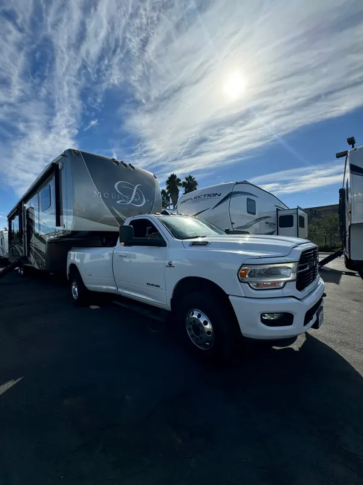

A good RV transport starts before the truck shows up. Fifteen minutes of prep keeps the hookup quick, keeps your things from rattling loose, and lets your driver focus on the road. Here is the checklist Jose gives every customer.
Outside the RV
- Bring in the slides and lock them. Every slide fully retracted, with the slide locks or travel bars in place if your RV has them.
- Raise and lock the stabilizer jacks. Leave the landing gear down until the truck is under the pin box.
- Retract the awning and secure it. Wind can unroll a loose awning at highway speed.
- Close and latch every compartment door. Check the basement doors twice.
- Disconnect shore power, water and sewer. Coil the cords and hoses and store them inside.
- Check the tires. Look for cracking on the sidewalls and check the date code. RV tires often age out before they wear out.
Inside the RV
- Empty the black and gray tanks. Full tanks add weight and slosh. Fresh water can be drained too, unless you need it on arrival.
- Secure anything that can move. Dishes, TVs, decor, the coffee maker. Put loose items in bins on the floor.
- Close and latch cabinets, the fridge and the shower door. A strip of painter's tape on cabinet doors helps.
- Close every window, vent and roof hatch.
- Turn off propane at the tanks and switch the fridge off or to battery as your manual recommends.
Paperwork and access
- Have the registration with the RV.
- If it is in storage or at an RV park, arrange the gate code or access ahead of time.
- If you won't be there, give Jose the name and number of someone who will, and the exact spot where the RV should go.
At pickup
Jose walks around the RV, checks the pin box or hitch, connects the brake wiring and tests the lights. He takes photos so you have a record of the condition at pickup, then sends updates on the way.
Got a question about your RV that isn't on this list? Text Jose or call (760) 532-1964. You can also read more about RV transport from San Diego.